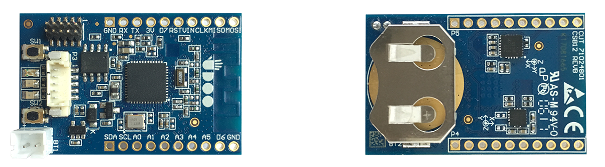
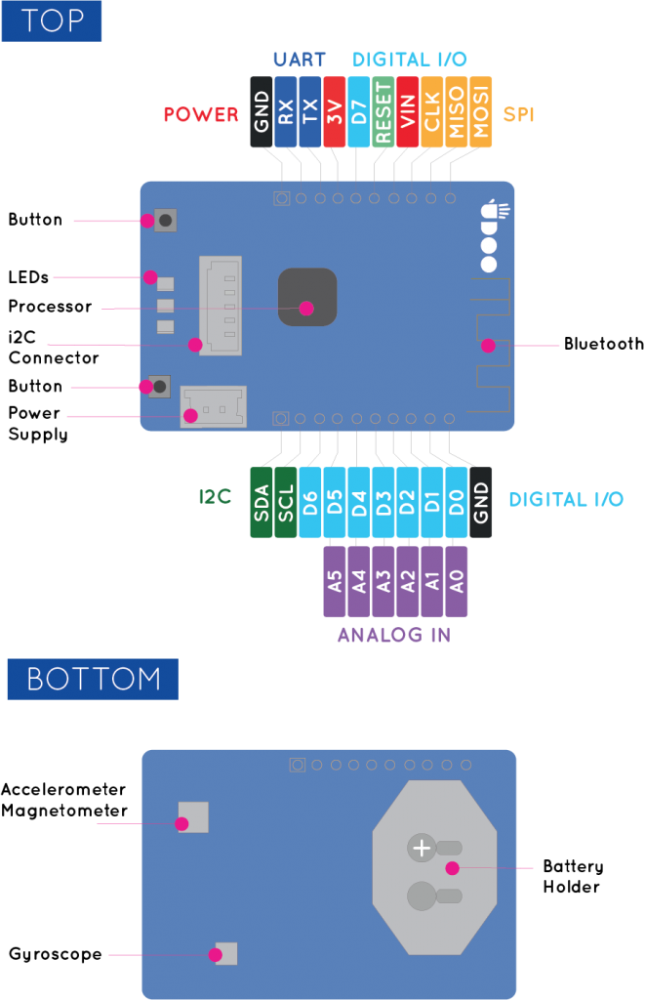

UDOO Blu Documentation
UDOO Blu Documentation
Introduction
UDOO BLU
UDOO BLU is a natural wireless I/O extension for IoT projects. This module features:
- Bluetooth Low Energy device
- ZigBee and 6LoWPAN;
- 3 user configurable LEDs (Red, Green, Yellow);
- 8 digital GPIOs, 6 available ADCs!
- 2 user Buttons
- Powered via button cell!
- It has snap-in connectors to allow a cascade configuration with all the UDOO BRICKS!
Download the UDOO BLU datasheet here.
Heads up! In order to prevent damages to your board, remember to:
- Never provide more than 3.3V in input to the GPIOs
- Never keep the board in touch with metal objects or surfaces while it is powered up

Technical specifications

- Texas Instruments CC2650 ARM Cortex M3
- Networking
- Bluetooth Low Energy (BLE) v4.1
- 6LoWPAN
- Integrated sensors
- FX0S8700CQ Acceleromter+Magnetometer
- FXAS21002C Gyroscope+Temperature
- 1x Sensors Snap-In I2C connector for UDOO Bricks
- 3x User Configurable LEDs (Red, Yellow, Green)
- Dimensions: 45mm x35mm (1.77″ x 1.37″)
- Digital I/O Pins: 8x Digital GPIOs
- Analog Input Pins: 6x Available ADCs
- 2x Buttons
- Other Interfaces:
- 1x I2C
- 1x SPI
- 1x UART Serial
- Power Supply:
- Battery Holder (button-cell) CR2032 - 3V
- External power supply - min 3.3V - max 5.5V
Community
- Official web site www.udoo.org
- Official forum www.udoo.org/forum
Forums
The official UDOO forums can be found at www.udoo.org/forum
The forum search facility has been tweaked to allow more general searching. Please do a search before making a post as the issue may already have been raised and answered.
IRC channel
There is an (unofficial) UDOO discussion channel on IRC. Using the IRC client of your choice, use server information: irc.freenode.net. Room name is #udoo.